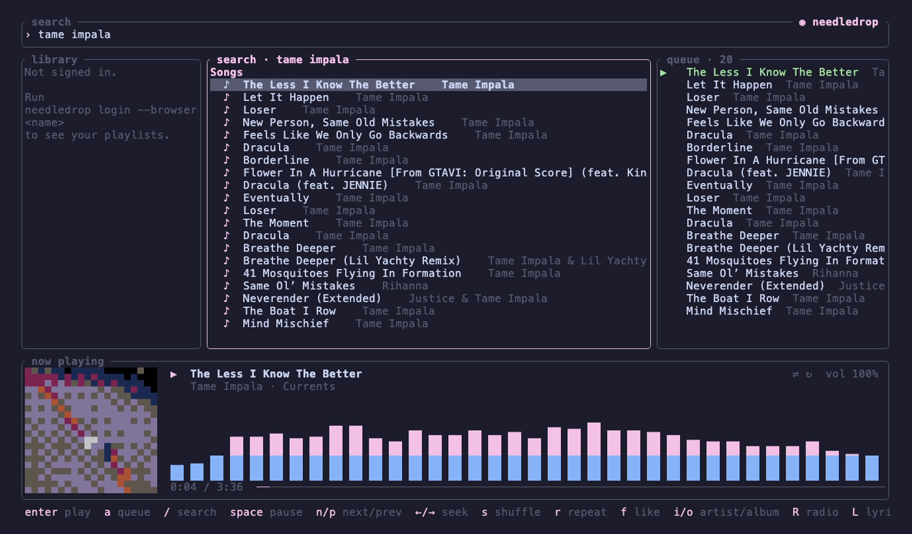
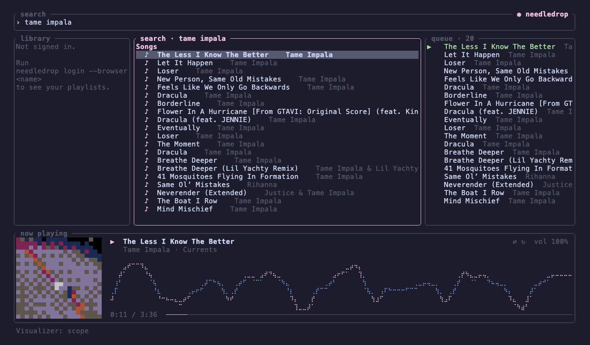
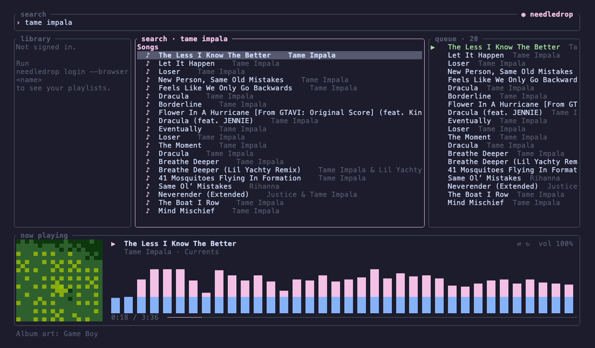
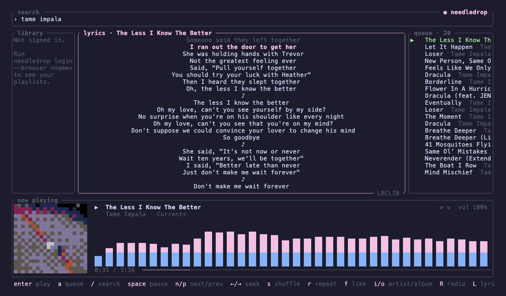
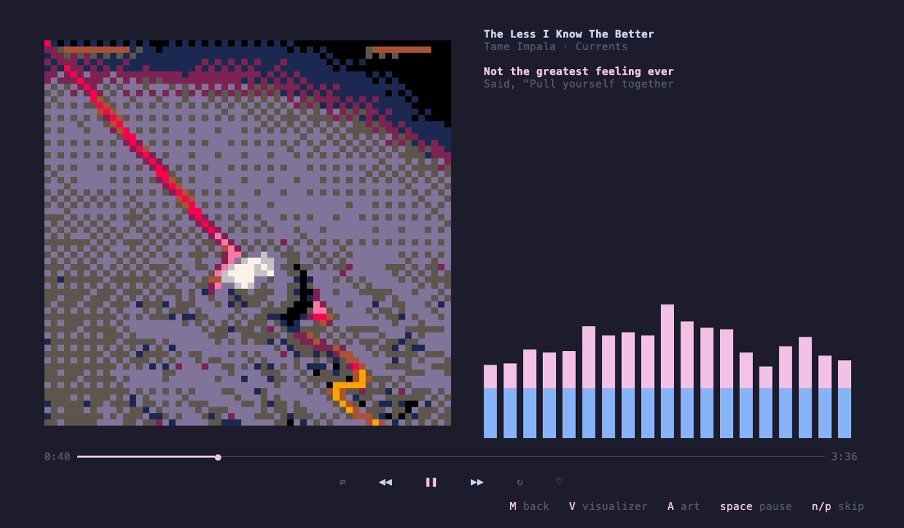

A good-looking terminal client for YouTube Music, written in Rust. 8-bit album art, visualizers synced to the beat, time-synced lyrics, and a queue that never runs dry.
The parts of YouTube Music you use, plus a few things it never had.
Your Quick picks, mixes, Listen again, and recommendations.
Artist and album pages, and search across songs, albums, artists, and playlists.
Liked Music and your playlists, with likes you can toggle.
Shuffle, repeat, gapless playback, and a radio that starts when the queue runs out.
Covers as pixel art in your theme's colors, or the PICO-8, Game Boy, or C64 palettes.
Spectrum bars, falling peaks, and an oscilloscope, after Windows Media Player's.
Time-synced lyrics from LRCLIB, with YouTube Music's own as a fallback.
Draws with your terminal's palette and recolors live when you switch themes.
The macOS Now Playing widget, or MPRIS on Linux.
Recorded signed out. Signed in, the side pane holds your library.





macOS and Linux. You need Rust 1.88 or newer.
brew install mpv yt-dlp ffmpegcargo install --locked --git https://github.com/audiarmadhani/needledropneedledrop login --browser chromeneedledropneedledrop install-app makes it a proper music app, so notch and menu bar widgets can see it.Vim-style, and on screen at the bottom of every pane.